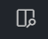
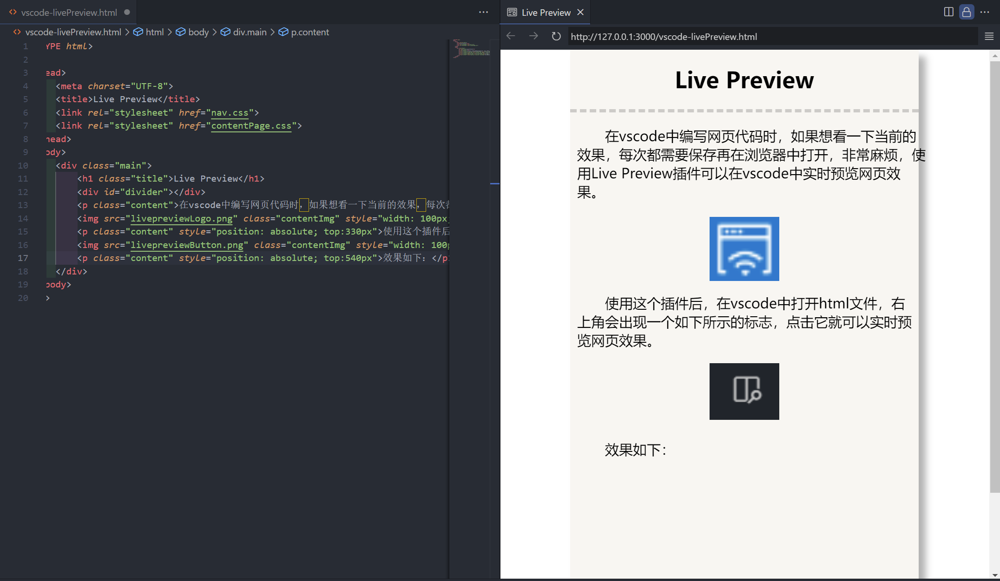
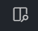
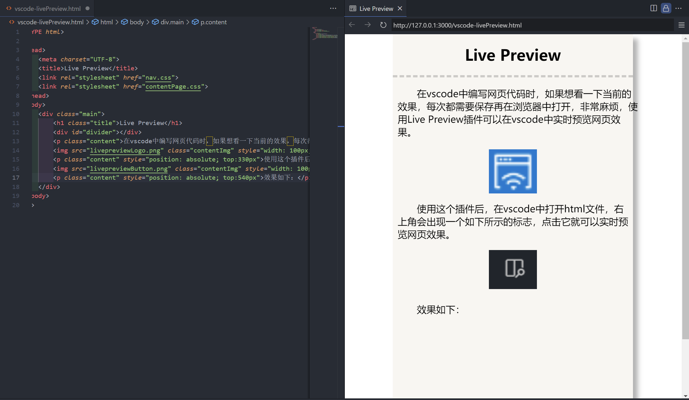

Live Preview
在vscode中编写网页代码时，如果想看一下当前的效果，每次都需要保存再在浏览器中打开，非常麻烦，使用Live Preview插件可以在vscode中实时预览网页效果。
使用这个插件后，在vscode中打开html文件，右上角会出现一个如下所示的标志，点击它就可以实时预览网页效果。
效果如下：
在vscode中编写网页代码时，如果想看一下当前的效果，每次都需要保存再在浏览器中打开，非常麻烦，使用Live Preview插件可以在vscode中实时预览网页效果。
使用这个插件后，在vscode中打开html文件，右上角会出现一个如下所示的标志，点击它就可以实时预览网页效果。
效果如下：
